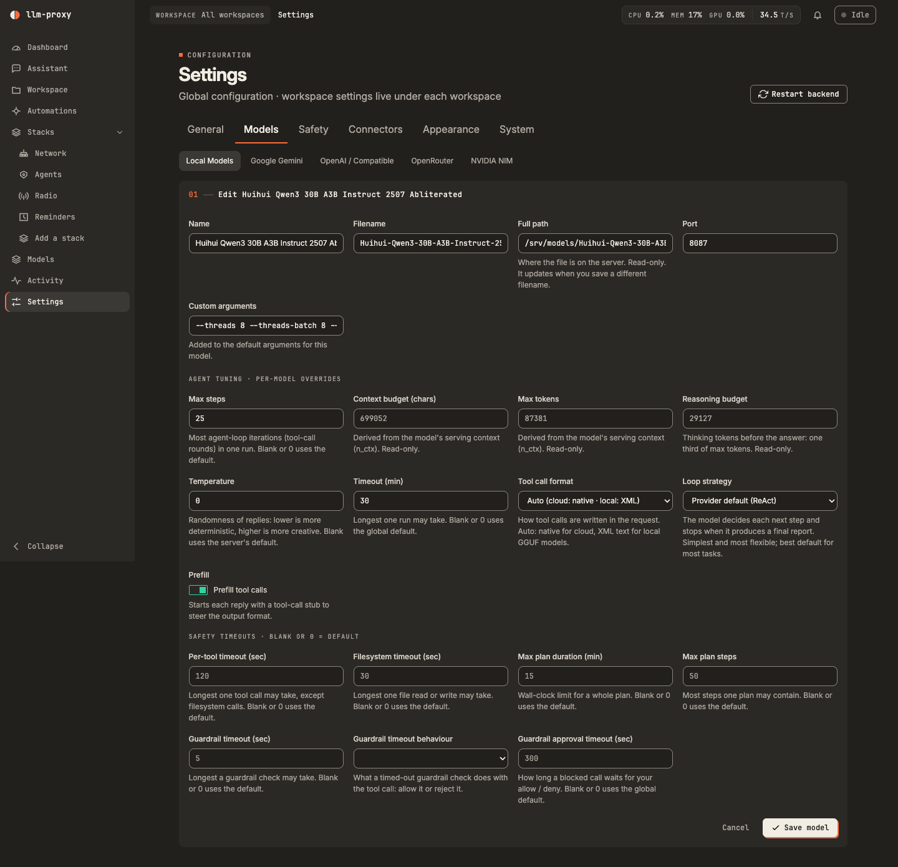

Models
Qwen3.6 35B A3BRunning
Huihui Qwen3 30B A3B Instruct 2507 Abliterated
Inkling 2 Mini
LFM2.5-24B-A2B
NVIDIA Nemotron 3.5 Lightning 30B A3B
Ornith-1.5-35B
deepseek-v4.1-flash
glm-5.3-flash
nemotron-3.5-lightning-30b-a3b
The owner chose option A (a row opens a side panel), liked C's cards, and asked to rethink the whole Models area. Today model settings live in four places: the sidebar's Models page, Settings › Models (five provider tabs and the edit form), Settings › General (primary and fallback model, model folder, llama-server, default arguments, idle unload, GPU, run lanes, helper model) and the dashboard's "LLM and host" tab. Here they become one Models page with four tabs (Models · Providers · Engine · Routing), and everything to read stays on Dashboard › LLM and host, the same split a stack has (ADR-0089). Settings loses its Models tab and those General fields. Model names are vertex's; the rest is sample data. ?theme=light for paper.


Your request. Same panel, one new section on top (dashed): the local model that is loaded, its port, whether it is ready, how long it has run and when it last answered. With no local model loaded it says "No local model running". It reads what the server already reports (/state → active); nothing new on the server.
A, B and C as first shown: v1.html.